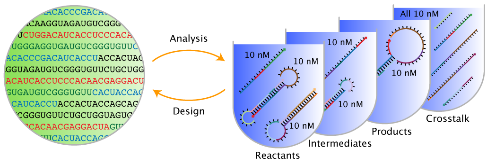

Overview¶
About¶
NUPACK is a growing software suite for the analysis and design of nucleic acid structures, devices, and systems serving the needs of researchers in the fields of nucleic acid nanotechnology, molecular programming, synthetic biology, and across the life sciences. NUPACK algorithms are formulated in terms of nucleic acid secondary structure (i.e., the base pairs of a set of nucleic acid strands) and employ empirical free energy parameters. Mixed-material calculations are supported (RNA/DNA or RNA/2'OMe-RNA) with the material specified at nucleotide resolution [Nanjundiah25]. Much of this software can be conveniently run using the NUPACK web app at nupack.org [Zadeh11a,Fornace25]. This User Guide provides documentation for the NUPACK Python module.
When finishing a project that has benefited from NUPACK calculations, please remember to cite the NUPACK web application and algorithms appropriately; citations are an important component in helping to secure funding for NUPACK development and maintenance. Please email us with questions, comments, feature requests, and bug reports at support@nupack.org.
— The NUPACK Team
Problem Categories¶
NUPACK algorithms address two fundamental classes of problems:
- Sequence analysis: given a set of nucleic acid strands, analyze the equilibrium base-pairing properties over a specified ensemble.
- Sequence design: given a set of desired equilibrium base-pairing properties, design the sequences of a set of nucleic acid strands over a specified ensemble. Sequence design is performed subject to diverse hard and soft constraints.

Figure: Sequence analysis and design using NUPACK.
NUPACK algorithms operate over two fundamental ensembles:
- Complex ensemble: the ensemble of all (unpseudoknotted connected) secondary structures for an arbitrary number of interacting nucleic acid strands.
- Test tube ensemble: the ensemble of a dilute solution containing an arbitrary number of nucleic acid strand species (introduced at user-specified concentrations) interacting to form an arbitrary number of complex species.
Furthermore, to enable reaction pathway engineering of dynamic hybridization cascades or large-scale structural engineering including pseudoknots, NUPACK generalizes sequence analysis and design to multi-complex and multi-tube ensembles [Wolfe17].
NUPACK capabilities are presented in three categories:
- Analysis: Analyze the equilibrium base-pairing properties one or more test tube ensembles (or one or more complex ensembles). These are the all-purpose sequence analysis tools.
- Design: Design the the sequences for one or more test tube ensembles (or one or more complex ensembles). These are the all-purpose sequence design tools.
- Utilities: Analyze or design a single complex ensemble. These are quick tools applicable when your ensemble is a single complex.
Examples
Load Python NUPACK module
from nupack import *model1 = Model(material='rna', celsius=37)# specify strands
A = Strand('CTGATCGAT', name='Strand A')
B = Strand('GATCGTAGTC', name='Strand B')
# specify tube
t1 = Tube(strands={A: 1e-8, B: 1e-9},
complexes=SetSpec(max_size=2), name='Tube 1') # all complexes of up to 2 strands
# run tube analysis job
my_results = tube_analysis(tubes=[t1], model=model1)a = Domain('A4', name='Domain a')
b = Domain('N10', name='Domain b') # equivalent sequence specification
c = Domain('R5N5', name='Domain c')
# specify target strands
A = TargetStrand([a, a, b], name='Strand A')
B = TargetStrand([~b, ~c], name='Strand B') # ~e denotes the reverse complement of e
C = TargetStrand([c], name='Strand C')
# specify target complexes
C1 = TargetComplex([A, B, C], '.8(10+)10(10+)10', name='Complex C1')
C2 = TargetComplex([B, C], '.10(10+)10', name='Complex C2')
# specify target tube
tt1 = TargetTube(on_targets={C1: 1e-8, C2: 1e-8},
off_targets=SetSpec(max_size=3), # all off-target complexes of up to 3 strands
name='TargetTube 1')
# specify tube design problem
my_des = tube_design(tubes=[tt1],
hard_constraints=[], soft_constraints=[],
defect_weights=None, options=None, model=model1)
# run tube design job
des_results = my_des.run(trials=3) # run 3 independent design trialsLicense¶
NUPACK Software License Agreement for Non-Commercial Academic Use
Copyright © 2003–2022. California Institute of Technology. All rights reserved.
Use of the NUPACK Python module and/or source code (“Software”) in source form and/or binary form, with or without modification, is permitted for non-commercial academic purposes only, subject to the conditions and disclaimer stated below.
Conditions
1. Redistribution of the Software in source form and/or binary form is not permitted.
2. Web applications that use the Software in source form and/or binary form are not permitted.
3. Neither the name of the copyright holder nor the names of its contributors may be used to endorse or promote derivative works without specific prior written permission.
Disclaimer
The Software is provided by the copyright holders and contributors “as is” and any express or implied warranties, including, but not limited to, the implied warranties of merchantability and fitness for a particular purpose are disclaimed. In no event shall the copyright holder or contributors be liable for any direct, indirect, incidental, special, exemplary, or consequential damages (including, but not limited to, procurement of substitute goods or services; loss of use, data, or profits; or business interruption) however caused and on any theory of liability, whether in contract, strict liability, or tort (including negligence or otherwise) arising in any way out of the use of this software, even if advised of the possibility of such damage.
Contact
For any questions about this Software License Agreement please contact info@nupack.org.
Citation¶
For citation, please select from the list below as appropriate for your application:
NUPACK Web App
- Run jobs online at nupack.org
- M. E. Fornace, J. Huang, C. T. Newman, A. Nanjundiah, N. J. Porubsky, M. B. Pierce, N. A. Pierce. NUPACK: analysis and design of nucleic acid structures, devices, and systems. ChemRxiv, 2025. (pdf)
- J. N. Zadeh, C. D. Steenberg, J. S. Bois, B. R. Wolfe, M. B. Pierce, A. R. Khan, R. M. Dirks, N. A. Pierce. NUPACK: analysis and design of nucleic acid systems. J Comput Chem, 32:170–173, 2011. (pdf)
NUPACK Analysis Algorithms
-
Complex analysis and test tube analysis
- M.E. Fornace, N.J. Porubsky, and N.A. Pierce (2020). A unified dynamic programming framework for the analysis of interacting nucleic acid strands: enhanced models, scalability, and speed. ACS Synth Biol, 9:2665-2678, 2020. (pdf, supp info)
- R. M. Dirks, J. S. Bois, J. M. Schaeffer, E. Winfree, and N. A. Pierce. Thermodynamic analysis of interacting nucleic acid strands. SIAM Rev, 49:65-88, 2007. (pdf)
-
Pseudoknot analysis
- R. M. Dirks and N. A. Pierce. An algorithm for computing nucleic acid base-pairing probabilities including pseudoknots. J Comput Chem, 25:1295-1304, 2004. (pdf)
- R. M. Dirks and N. A. Pierce. A partition function algorithm for nucleic acid secondary structure including pseudoknots. J Comput Chem, 24:1664-1677, 2003. (pdf, supp info)
NUPACK Design Algorithms
-
Multi-tube design
- B. R. Wolfe, N. J. Porubsky, J. N. Zadeh, R. M. Dirks, and N. A. Pierce. Constrained multistate sequence design for nucleic acid reaction pathway engineering. J Am Chem Soc, 139:3134-3144, 2017. (pdf, supp info)
-
Test tube design
- B. R. Wolfe and N. A. Pierce. Sequence design for a test tube of interacting nucleic acid strands. ACS Synth Biol, 4:1086-1100, 2015. (pdf, supp info, supp tests)
-
Complex design
- J. N. Zadeh, B. R. Wolfe, and N. A. Pierce. Nucleic acid sequence design via efficient ensemble defect optimization. J Comput Chem, 32:439–452, 2011. (pdf, supp info, supp tests)
-
Design paradigms
- R. M. Dirks, M. Lin, E. Winfree, and N. A. Pierce. Paradigms for computational nucleic acid design. Nucl Acids Res, 32:1392-1403, 2004. (pdf, supp info, supp seqs)
Acknowledgments¶
We thank all the NUPACK users that have helped out as beta testers over the years, as well as the many NUPACK users that have emailed support@nupack.org to request features or report bugs. NUPACK is supported by the National Science Foundation (CTMC NSF-CHE-2317395, XSEDE NSF-ACI-1548562) and by the Beckman Institute at Caltech (PMTC). NUPACK has previously been supported by the National Science Foundation (Software Elements NSF-OAC-1835414, INSPIRE NSF-CHE-1643606, Expeditions in Computing NSF-CCF-0832824, Expeditions in Computing NSF-CCF-1317694, Chemical Bonding Center NSF-CHE-0533064, Multiscale Modeling NSF-DMS-0506468, Information Technology Research NSF-CCF-0204932, CAREER NSF-CCF-0448835), by the National Institutes of Health (CEGS P50 HG004071, National Research Service Award T32 GM007616), by the Gordon and Betty Moore Foundation (GBMF2809), by the Schmidt Academy for Software Engineering at Caltech, by the AWS/IST cloud credit program at Caltech, by the John Simon Guggenheim Memorial Foundation, by the Ralph M. Parsons Foundation, and by the Charles Lee Powell Foundation.
Versions¶
- NUPACK 3.0
- Features:
- Executables:
pfunc,pairs,mfe,subopt,count,energy,prob,pairs,defect,complexes,concentrations,distributions,design- These executables read input files containing comment lines preceded by
%; blank lines are not permitted.
- Terminology and notation:
- details in [Dirks07]
-
NUPACK 3.1
- New features:
- test tube design [Wolfe15]
- New executables:
tubedesignandtubedefect- These executables read
*.npscript files written in v1 of the NUPACK scripting language - In
*.npscript files, a comment begins with#and continues for the rest of the line; blank lines are permitted.
- Changes to existing executables:
- Name of executable
designchanged tocomplexdesign. - Name of executable
defectchanged tocomplexdefect. - Updates to the default options and
output file formats for executables
complexes,concentrations, anddistributions. Use option-v3.0to revert to NUPACK 3.0 behavior using NUPACK 3.1.
- Name of executable
- Terminology and notation:
- details in Section 1.1 of NUPACK 3.1 User Guide
- New features:
-
NUPACK 3.2
- New features:
- constrained multistate test tube design [Wolfe17]
- New executables:
multitubedesignandmultitubedefect- These executables read
*.npscript files written in v2 of the NUPACK scripting language. - In
*.npscript files, a comment begins with#and continues for the rest of the line; blank lines are permitted.
- These executables read
- Terminology and notation:
- details in Section 1.1 of NUPACK 3.2 User Guide
- New features:
-
NUPACK 4.0
- New features:
- unified dynamic programming framework [Fornace20]
- all-new code base
- all-new NUPACK Python module
- Commands:
- Scripting is done in Python
- Indices start at 0 (previous versions indexed starting at 1)
- Terminology and notation:
- details in [Fornace20]
- Revision notes:
- 4.0.0.20: Release of first public beta
- 4.0.0.21: Fix SSM display issue and wobble evaluation bug in design
- 4.0.0.23: Fix incorrect rounding of ensemble_size result
- 4.0.0.24: Fix diverging estimate of defects seen in design checkpoints
- 4.0.0.25: Fix concentration failure resulting from division by 0
- 4.0.0.26: Fix number of samples given for indistinguishable complexes
- 4.0.0.27: Add native support for Mac arm64 (M1) architectures
- 4.0.0.28: Add native support for Linux arch64 architecture, support Python 3.10, fix similarity soft constraint when specifying multiple domains
- 4.0.1.0: Add
fraction_unpaired_basesfunctionality, revise implementation of parallelism and cache usage, improve input validation - 4.0.1.1: Enable parallelism by default, add the
threadssetting, and set design to only use up toNthreads on a machine withNcores - 4.0.1.2: Remove support for Python 3.6, fix several bugs in 4.0.1 to do with parallel submission of designs, reloading designs, and other minor user interface problems
- 4.0.1.3: Fix unbounded growth in memory cache, optimize parallelism in design further, minor interface improvements
- 4.0.1.4: Fix concentration equilibration initial guess which occasionally caused lack of convergence
- 4.0.1.5: Fix large memory usage in analysis jobs containing many complexes, improve cache constraint
- 4.0.1.6: Fix missing
nt()method in Domain class - 4.0.1.7: Fix memory leak in Python when running many analyses sequentially
- 4.0.1.8: Add support for Python 3.11
- 4.0.1.9: Add support for Python 3.12 and fix rare issue in equilibrium concentration convergence
- 4.0.1.10: Fix issue when specifying mixtures of sequences containing U and T and provide binaries with more conservative instruction sets for Linux
- 4.0.1.11: Fix output printing for sequences containing U and T to match user inputs when possible
- 4.0.1.12: Fix concentration solver convergence issue with extremely unstable complexes and issue a warning for clashing complex names
- 4.0.2.0: updated GT internal mismatch values, internal asymmetry values, and terminal mismatch values in parameter set dna04.2 (DNA default)
- New features:
- NUPACK 4.1
- New features:
- Mixed-material calculations (RNA/DNA or RNA/2’OMe-RNA) [Nanjundiah25]
- Revision notes:
- 4.1.0.0: Release of first public beta
- New features:
| Nanjundiah25 | Nanjundiah A., Fornace M.E., Schulte S.J., Pierce N.A.: Models and algorithms for equilibrium analysis of mixed-material nucleic acid systems. bioRxiv. (2025) |
| Zadeh11a | Zadeh J.N., Steenberg C.D., Bois J.S., Wolfe B.R., Pierce M.B., Khan A.R., Dirks R.M., Pierce N.A.: NUPACK: Analysis and design of nucleic acid systems. J. Comput. Chem.. 32, (2011) |
| Fornace25 | Fornace M.E., Huang J., Newman C.T., Nanjundiah A., Porubsky N.J., Pierce M.B., Pierce N.A.: {NUPACK}: Analysis and design of nucleic acid structures, devices, and systems. chemRxiv. (2025) |
| Wolfe17 | Wolfe B.R., Porubsky N.J., Zadeh J.N., Dirks R.M., Pierce N.A.: Constrained multistate sequence design for nucleic acid reaction pathway engineering. J Am. Chem. Soc.. 139, (2017) |
| Dirks07 | Dirks R.M., Bois J.S., Schaeffer J.M., Winfree E., Pierce N.A.: Thermodynamic analysis of interacting nucleic acid strands. SIAM Rev.. 49, (2007) |
| Zadeh11b | Zadeh J.N., Wolfe B.R., Pierce N.A.: Nucleic acid sequence design via efficient ensemble defect optimization. J. Comput. Chem.. 32, (2011) |
| Wolfe15 | Wolfe B.R., Pierce N.A.: Nucleic acid sequence design for a test tube of interacting nucleic acid strands. ACS Synth. Biol.. 4, (2015) |
| Fornace20 | Fornace M.E., Porubsky N.J., Pierce N.A.: A unified dynamic programming framework for the analysis of interacting nucleic acid strands: Enhanced models, scalability, and speed. ACS Synth. Biol.. (2020) |